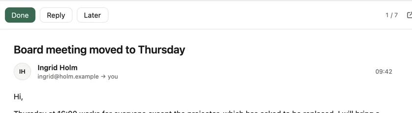
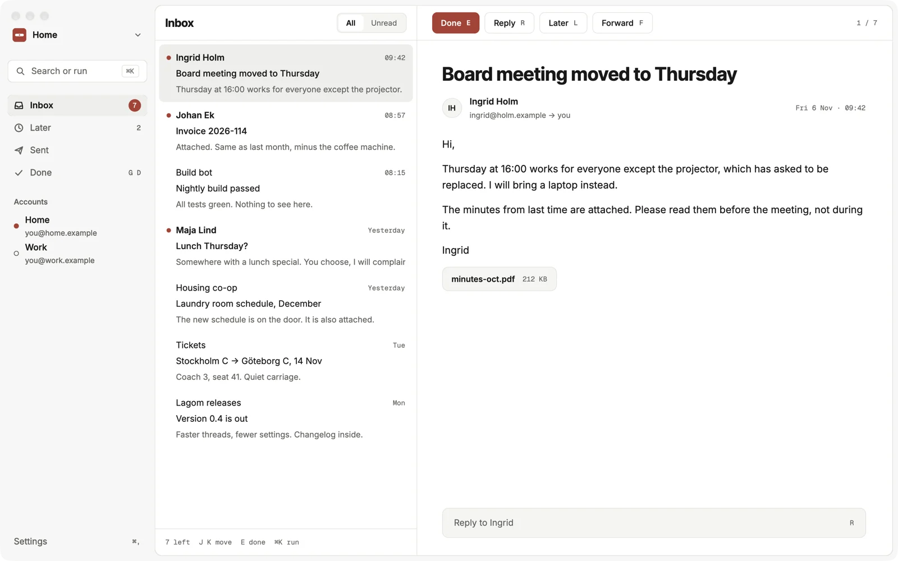
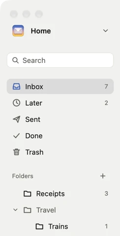
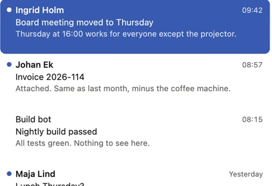
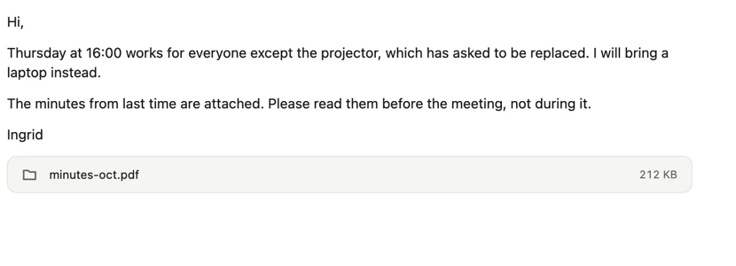
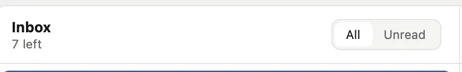

One key per decision.
Done is E. Reply is R. Later is L. The keys sit on the buttons, so you learn them by looking.
/ˈlɑːɡɔm/ ("LAH-gom") adv., adj. Swedish.
Not too much. Not too little. Just right.
A fast, keyboard-first email client with one job: getting you back to an empty inbox. Written in Rust for macOS, Linux and Windows. Local-first.
Early work. No release to download yet.
The app

In detail

Done is E. Reply is R. Later is L. The keys sit on the buttons, so you learn them by looking.

Inbox, Later and Done. Folders are there when you need them.

Sender, subject, one line. Unread gets a dot.
0
Every mail is done, later or answered.

Calm type, wide margins, attachments where you expect them.

The status bar counts down and reminds you of the keys.
Written in Rust and drawn on the GPU. Opens in a blink.
Local-first. Your mail stays on your computer and your server.
No AI features, no team features, no sign-up wall.